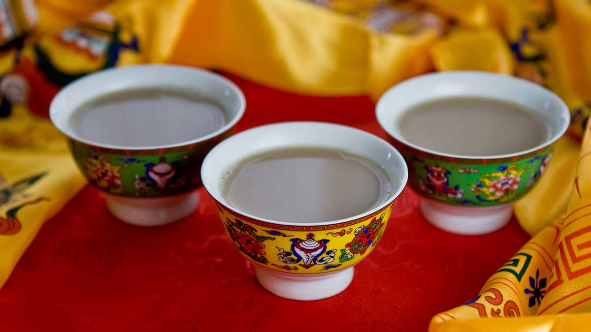

Butter Milk
Butter Milk or Bhoe ja serves as the perfect pairing with tsampa
It is an acquired taste for some, but it is absolutely delicious for a nomad!
Ingredients
- Black Tea
- Butter
- Milk
- Water
- Salt
Steps
- Bring Water to a boil
- Drop in the black tea bags
- Add in salt
- Mix in milk
- Combine all ingredients in a blender